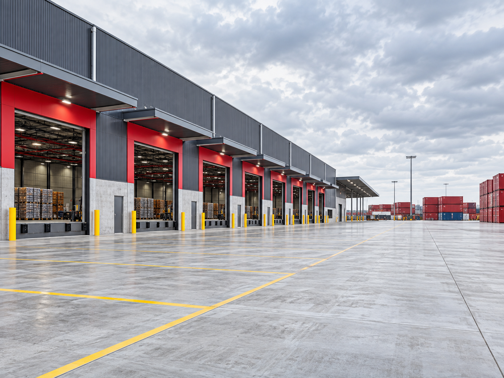

Interstate transport services
Capacity built around your operation.
Practical road transport solutions for removal, relocation and logistics businesses moving containers across Australia's East Coast.
Four ways we support you
One transport partner.
Flexible service options.
From a single interstate requirement to planned, recurring capacity, each movement is considered around origin, destination, timing and the way your wider operation works.
 01
01Direct interstate movement
Interstate linehaul
Direct road transport between major East Coast markets, planned for dependable business-to-business movement.
- Established and developing interstate routes
- Planning around origin, destination and timing
- Responsive operational communication
 02
02Purpose-built capacity
20ft container transport
Transport capacity for standard 20ft containers, organised around the specific needs of each movement.
- Standard 20ft container movements
- Up to four containers supported per movement
- Capacity and schedule planned together
03
Predictable departures
Scheduled road services
Planned services that help your team coordinate interstate movements around customer commitments.
- Dependable departure planning
- Target Melbourne–Brisbane depot-to-depot transit
- Clear coordination with your operation

04Capacity when you need it
Overflow & contract capacity
Flexible support when demand moves beyond your usual capacity or you need a regular transport arrangement.
- One-off and overflow requirements
- Support for seasonal demand
- Regular contracted capacity options
How it works
From requirement
to road-ready plan.
Share the requirement
Tell us the origin, destination, container volume and preferred timing.
Plan the movement
We review the route, equipment, available capacity and operational details.
Confirm the schedule
Your movement is aligned to a practical departure and transit plan.
Stay connected
Clear communication supports your team from planning through delivery.
Ready to move?
Let's build the right transport plan.
Share your route, timing and capacity requirements. Our team will help you identify the most suitable service.
Request a quote